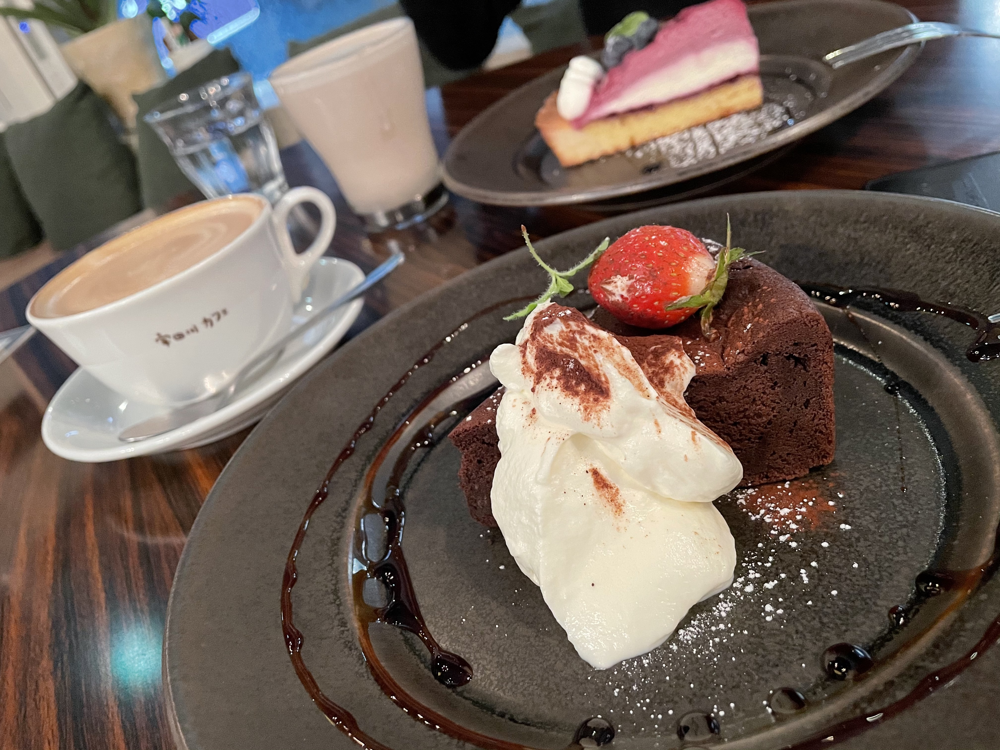
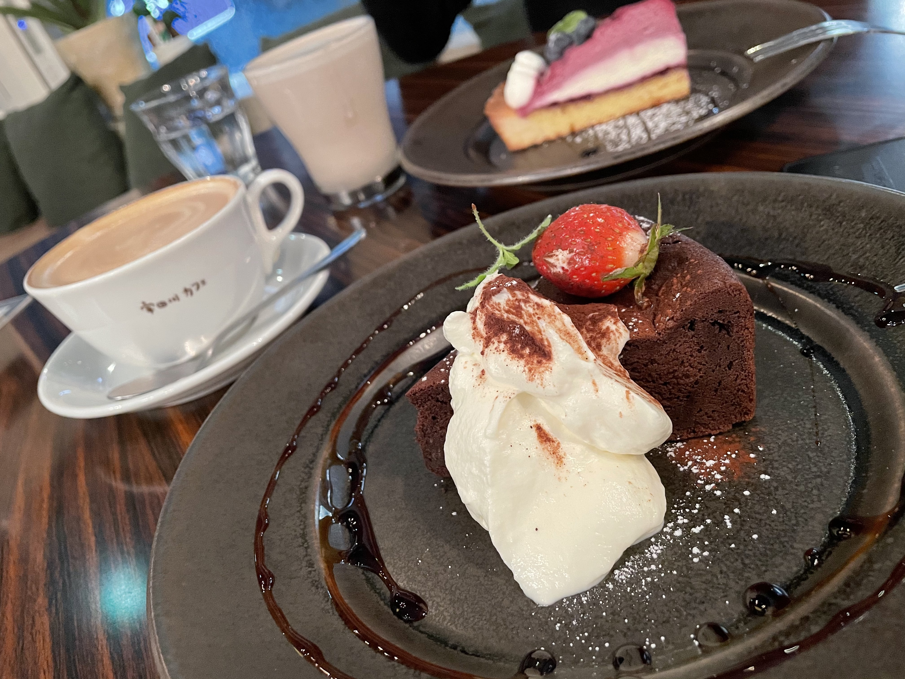
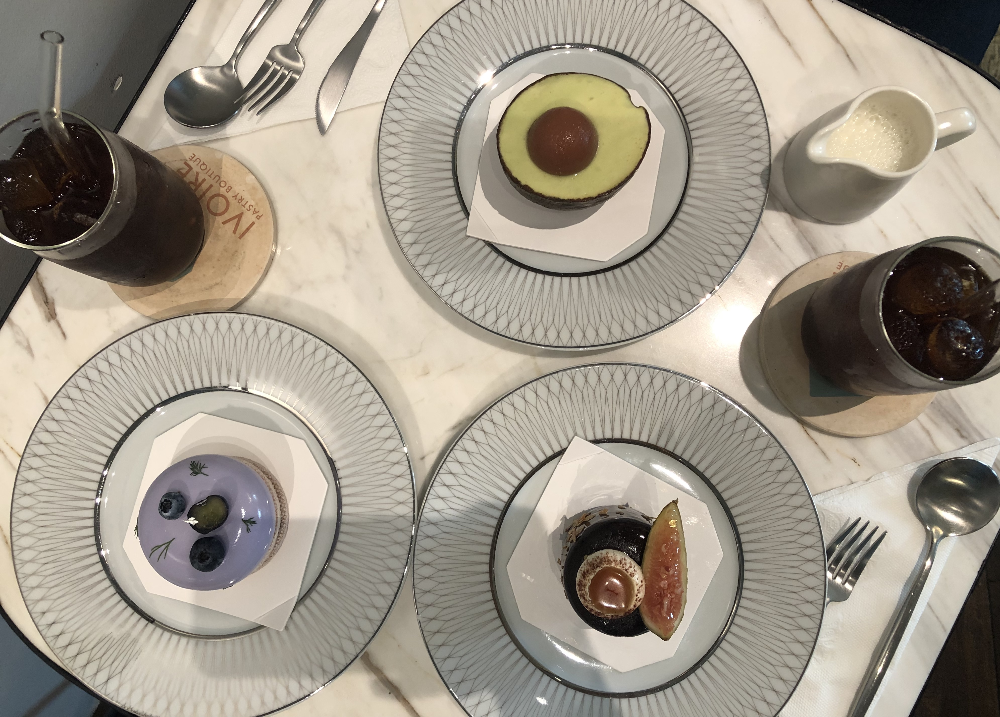
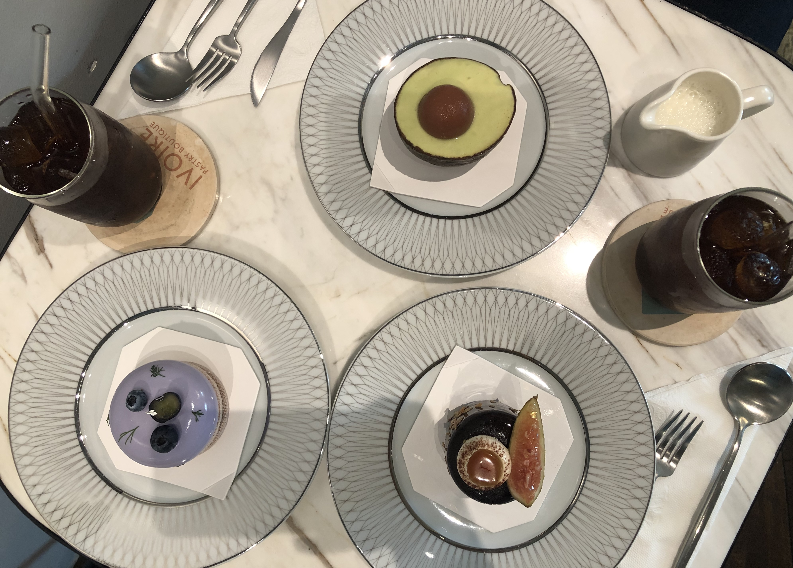
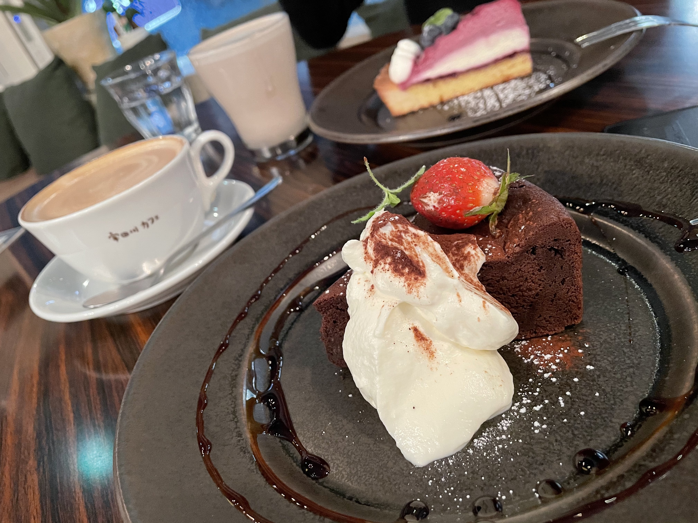
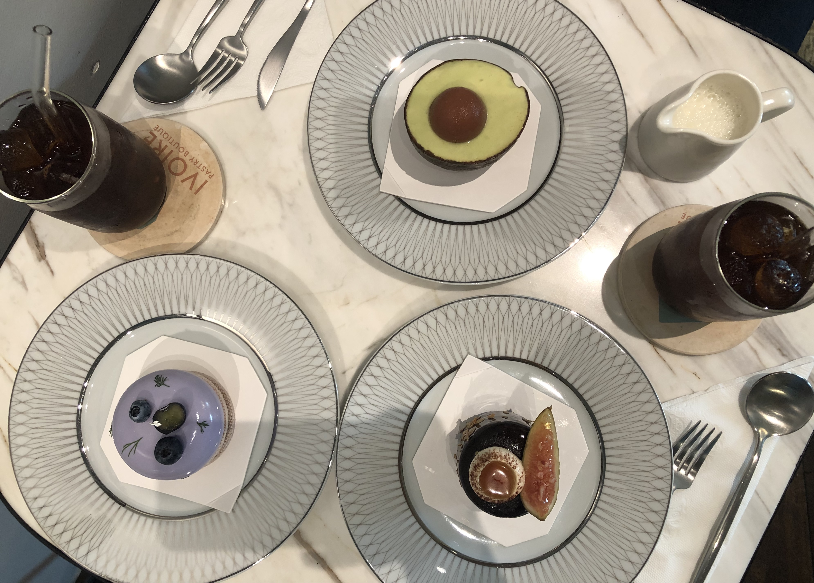

福島
おすすめのカフェ① Blanc.（カフェ ブラン）

東京
おすすめのカフェ② 宇多川カフェ
 

ベトナム
おすすめのカフェ③ Ivoire（イヴォワール）
 

マレーシア
おすすめのカフェ④ Molten Chocolate Cafe（モルテンチョコレートカフェ）


福島、東京、ベトナム、マレーシアで行ったお気に入りのカフェを紹介します。
カフェに行ったら絶対にカフェラテを頼みます。
福島
おすすめのカフェ① Blanc.（カフェ ブラン）
東京
おすすめのカフェ② 宇多川カフェ

ベトナム
おすすめのカフェ③ Ivoire（イヴォワール）

マレーシア
おすすめのカフェ④ Molten Chocolate Cafe（モルテンチョコレートカフェ）